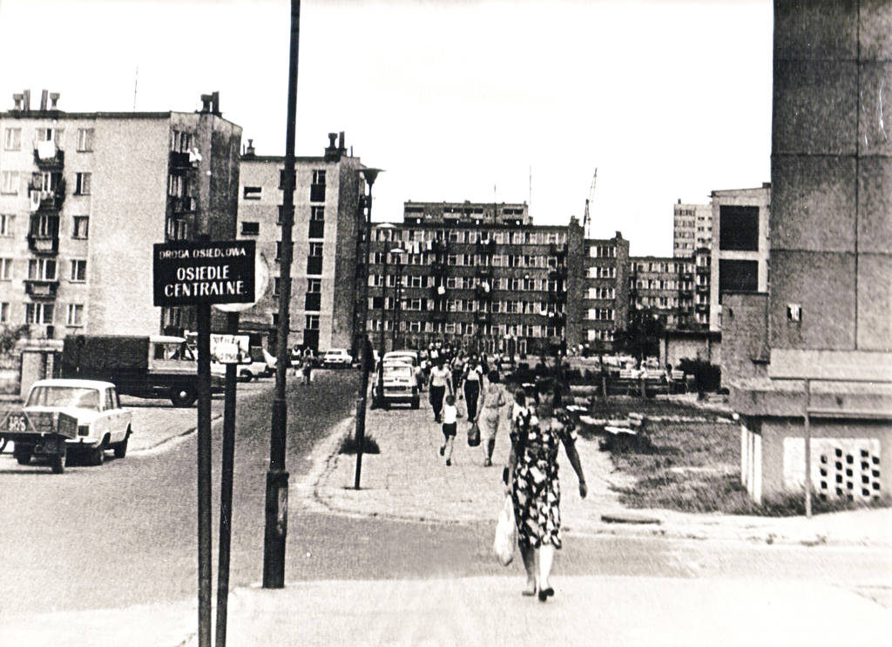

W ciągu 60 lat Stalowa Wola z małego przyfabrycznego osiedla urosła do dużego miasta.
W końcu 2019 zajmuje w województwie podkarpackim trzecie miejsce po Rzeszowie i
Przemyślu pod względem ludności. Jest od 1 stycznia 1999 również miastem powiatowym.
W skład powiatu wchodzą gminy: Bojanów, Pysznica, Radomyśl nad Sanem,
Stalowa Wola, Zaklików i Zaleszany. W 2016 na terenie powiatu stalowowolskiego
o powierzchni 832 km² zamieszkiwało ok. 108 tys. osób.
W 1989 roku miasto zostało odznaczone
Krzyżem Komandorskim Orderu Odrodzenia Polski.
Stalówka.vvv
Home
